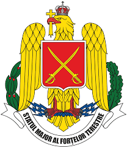

Fortele terestre a Romaniei

Forțele Terestre Române sunt o componentă esențială a Armatei României, cu o istorie bogată și o
misiune continuă de a asigura securitatea națională. Explorează mai departe pentru a descoperi
structura, misiunile și echipamentul acestei instituții importante.
Acestea sunt o bransa foarte importanta din armata romana, cu o forta de 36.000 de soldati, fortele terestre detin locul 1
in cea mai mare bransa din toate.
tot acestea se pot mandricu 345 de tancuri tr-85M1 "Bizonul"
aproape 10.000 de vehicule destinate utilizarii in scop armat, 720 unitati de artilerie si 225 MLRS(sisteme de lansare a rachetelor).
Echipament
Urmatoarele sunt principalele dotari al fortelor terestre a Romaniei. Acestea provin din tari precum: Statele Unite ale Americii, Israel, Italia, Franta si unele din Romania.
Tancuri:
TR-85M1 "Bizonul": Principalul tanc al Forțelor Terestre, un model românesc derivat din tancul T-55 sovietic, dar modernizat semnificativ. Acesta are un motor mai puternic, un blindaj îmbunătățit și un sistem de foc avansat.
Leopard 2 (planuri de achiziție): În contextul colaborării cu NATO și al modernizării arsenalului, România plănuiește achiziționarea unor tancuri moderne Leopard 2.
Mașini de luptă pentru infanterie:
MLI-84M "Jderul": Un vehicul blindat pentru infanterie modernizat, echipat cu tun de 25 mm și rachete antitanc Spike, destinat susținerii infanteriei în luptă.
Transportoare blindate:
Piranha V: Transportor blindat achiziționat recent, folosit pentru transportul trupelor, cu protecție avansată împotriva minelor și a dispozitivelor explozive improvizate.
TAB B33 Zimbru: O versiune mai veche a transportorului amfibiu blindat, derivat din BTR-70, utilizat în roluri de sprijin pentru infanterie.
Artilerie
Sisteme de artilerie tractată și autopropulsată:
Obuziere calibru 152 mm (Model 1981): Utilizate pentru sprijinirea operațiunilor terestre la distanță.
Sisteme de rachete multiple LAROM: Un sistem de artilerie cu rachete multiple de 160 mm, capabil să lovească ținte la distanțe de până la 45 km.
Sisteme HIMARS (High Mobility Artillery Rocket System): Acest sistem de rachete multiple achiziționat din SUA permite atacuri de precizie pe distanțe lungi (până la 300 km) și reprezintă una dintre cele mai avansate piese de artilerie din dotare.
Armament Antiaerian
Sisteme de apărare aeriană cu rază scurtă și medie:
Mistral: Rachete sol-aer portabile de fabricație franceză, destinate apărarea împotriva aeronavelor la altitudine joasă.
Gepard: Un sistem de apărare antiaeriană autopropulsat, echipat cu tunuri duble de 35 mm, utilizat pentru apărarea trupelor împotriva atacurilor aeriene.
Patriot (planificat): Un sistem modern de apărare aeriană cu rază lungă, achiziționat pentru a întări apărarea aeriană a României în fața potențialelor amenințări balistice și aeriene.
Armament Antitanc
Rachete antitanc Spike: De proveniență israeliană, aceste rachete ghidate antitanc pot lovi ținte la distanțe de până la 4-8 km, în funcție de versiune, și sunt folosite atât de infanterie, cât și montate pe vehicule.
Lansatoare portabile: Soldații români folosesc lansatoare antitanc portabile, precum RPG-7 sau AG-7, pentru neutralizarea vehiculelor blindate inamice.
Arme de Infanterie
Arme automate: Infanteria utilizează puști de asalt precum Pistol Mitralieră Model 1996 (5,45 mm) și Pușca Automată Model 2000 (5,56 mm NATO), care sunt modernizări ale vechilor AKM și fabricate local.
Mitraliera M240 și PKM: Mitralierele grele de calibru 7,62 mm, sunt folosite pentru sprijinirea infanteriei și montate pe vehicule.
Sisteme de lunetă: Soldații dispun și de puști de precizie, cum ar fi PSL de calibru 7,62 mm, pentru misiuni de recunoaștere și eliminarea țintelor de la distanță.
Vehicule Ușoare și de Transport
URO VAMTAC: Un vehicul tactic folosit pentru transportul trupelor și echipamentelor în zone de conflict.
HMMWV (Humvee): Versiuni ale popularului vehicul american de teren, utilizate pentru transport și patrulare în diverse operațiuni.
Tehnologie generala si planuri de modernizare
Echipament de Comunicații și Tehnologie Informațională
Sistemele moderne de comunicații integrate sunt esențiale pentru interoperabilitatea cu forțele NATO. Acestea includ echipamente radio de ultimă generație, sisteme de management al câmpului de luptă (BMS) și platforme de supraveghere.
Drone și Sisteme de Recunoaștere
Drone de supraveghere și recunoaștere: România folosește diferite tipuri de drone mici pentru recunoaștere tactică pe câmpul de luptă, în special pentru operațiuni de informații și supraveghere.
Colaborare NATO și Planuri de Modernizare
România se află în continuă modernizare a echipamentului său militar prin achiziții și colaborări internaționale, având planuri de îmbunătățire a capacităților sale cu echipamente precum Leopard 2, Patriot, și noi sisteme de apărare aeriană
Aceste echipamente, împreună cu instruirea personalului, contribuie la întărirea capacităților defensive ale României și la respectarea angajamentelor în cadrul NATO.